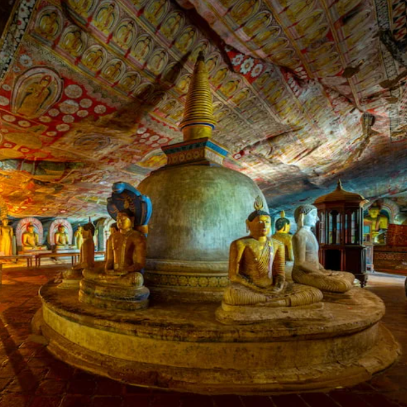

Itinerary
Summary
Day 01
Sigiriya
sigiriya is an ancient rock fortress and palace built by King Kashyapa during the reign of 473 – 495 which is standing majestically 660 feet straight up. It is located in the northern Matale district near the town of Dambulla in central province of Sri Lanka. The word Sigiriya or the Sinhagiri means the Lion’s Rock where you have to climb up 1200 steps before you reach the Lion Rock Fortress on top of Sigiriya. There are several platforms that break up the steps and allow for a little break if you need it. Today Sigiriya rock fortress is one of the most famous Archeological Treasure and UNESCO named Sigiriya rock as a World Heritage in 1982 under the name “Ancient City of Sigiriya Sri Lanka”.
Dhambulla Cave Temple
Dambulla Cave Temple, also known as the Golden Temple of Dambulla, is a UNESCO World Heritage Site in Sri Lanka. It comprises five captivating caves carved into a massive rock formation. The caves are adorned with over 150 stunning statues of Lord Buddha, ranging from small to colossal sizes. The walls are adorned with intricate frescoes depicting scenes from Buddhist mythology and teachings. With a history that dates back to the 1st century BC, Dambulla Cave Temple holds great cultural and religious significance. It serves as a pilgrimage site and a place of meditation for Buddhists. The temple's remarkable architecture, combined with its spiritual ambiance and scenic surroundings, make it a must-visit destination for those seeking cultural immersion and a connection with Sri Lanka's rich heritage.
Day 02
Anuradhapura Highlights
Mihintale
Mihintale, located in Sri Lanka, is a sacred mountain peak and a significant religious site. It is regarded as the place where Buddhism was introduced to the island nation. Mihintale is revered as a pilgrimage site for Buddhists and holds immense historical and cultural importance. The mountain is home to a series of ancient monastic ruins, including stupas, meditation halls, and rock-cut caves, which served as dwelling places for Buddhist monks. At the summit of Mihintale, visitors can find the majestic Mahaseya Stupa, one of the largest stupas in Sri Lanka. Apart from its religious significance, Mihintale offers breathtaking views of the surrounding countryside, making it a popular destination for tourists and nature lovers. The tranquil atmosphere and the blend of spirituality and natural beauty make Mihintale a captivating place to explore and connect with Sri Lanka's Buddhist heritage.
Jetavaranama Stupa
Jetavanaramaya Stupa, located in the ancient city of Anuradhapura, Sri Lanka, is one of the most impressive stupas in the world. Constructed during the 3rd century AD, it stands as a testament to the architectural prowess of ancient Sri Lanka. The Jetavanaramaya Stupa was built by King Mahasena and is believed to have been the tallest stupa of its time, reaching a height of approximately 122 meters. The stupa is adorned with intricate carvings and decorative elements, showcasing the artistic finesse of the era. Despite the passage of centuries and the ravages of time, the Jetavanaramaya Stupa still retains its grandeur and significance. Today, it serves as a prominent Buddhist pilgrimage site and a remarkable archaeological marvel that attracts visitors from around the world.
Abhayagiri Monastery Complex
Abhayagiri Monastery Complex, located in Anuradhapura, Sri Lanka, is an ancient Buddhist monastery that flourished during the ancient kingdom of Anuradhapura. Established in the 2nd century BC, it became one of the largest monastic institutions in the world during its peak. The Abhayagiri Monastery Complex was a center of Buddhist learning, attracting scholars and monks from various parts of Asia. It comprised numerous buildings, including stupas, monastic dwellings, lecture halls, and meditation chambers. The complex was adorned with intricate carvings, sculptures, and exquisite artwork. The site also housed the iconic Abhayagiri Dagoba, a massive stupa that stood as a symbol of religious devotion and architectural grandeur. Today, the remnants of the Abhayagiri Monastery Complex provide glimpses into its glorious past and serve as a reminder of Sri Lanka's rich Buddhist heritage.
Mahamewna Park
Mahamewna Park, located in Anuradhapura, Sri Lanka, is a serene and historically significant site. It is believed to be the garden complex where the famous historic meeting between King Devanampiya Tissa and Arahat Mahinda, the Buddhist missionary who introduced Buddhism to Sri Lanka, took place over two millennia ago. The park is spread over an expansive area and features well-maintained lawns, trees, and shrubs, creating a peaceful and tranquil atmosphere. Within the park, visitors can find the majestic Isurumuniya Temple, famous for its rock carvings and ancient architecture. Mahamewna Park attracts both pilgrims and tourists alike, seeking to immerse themselves in the rich history and spiritual essence of ancient Anuradhapura.
Samadhi Buddha Statue

The Samadhi Buddha Statue, located in Anuradhapura, Sri Lanka, is a remarkable symbol of tranquility and enlightenment. Carved during the 4th century AD, it depicts Lord Buddha in a deep state of meditation known as samadhi. This iconic statue stands at an impressive height of 7 meters and is carved out of a single granite rock. The serene expression on the face of the Samadhi Buddha exudes a sense of calm and inner peace. The statue is intricately detailed, with delicate hand gestures and the distinctive ushnisha (topknot) on the head. It is considered a masterpiece of ancient Sri Lankan art and a significant religious artifact. The Samadhi Buddha Statue remains an important pilgrimage site and a symbol of devotion for Buddhists, while also attracting visitors who are captivated by its beauty and spiritual aura.
Jaya Sri Maha Bodhi

Jaya Sri Maha Bodhi, located in Anuradhapura, Sri Lanka, is one of the most sacred and revered Buddhist sites in the country. It is believed to be the oldest living tree in documented history, dating back over 2,200 years. The Bodhi tree at the site is said to be a sapling brought from the original Bodhi tree in Bodhgaya, India, under which Lord Buddha attained enlightenment. Jaya Sri Maha Bodhi is surrounded by a serene and beautifully landscaped park, attracting pilgrims and visitors seeking spiritual solace. The site is adorned with prayer flags, colorful offerings, and small shrines, creating a peaceful and reverential ambiance. It serves as a place of worship, meditation, and reflection for Buddhists from around the world, providing a tangible connection to the profound enlightenment of Lord Buddha.
Ruwanwelisaya Dagoba
Ruwanwelisaya Dagoba, located in Anuradhapura, Sri Lanka, is an iconic and sacred Buddhist stupa. Constructed during the 2nd century BC by King Dutugemunu, it stands as a testament to the grandeur of ancient Sri Lankan architecture and engineering. The Ruwanwelisaya Dagoba is a massive brick structure with a towering height of approximately 92 meters, making it one of the tallest stupas in the country. The stupa is adorned with intricate carvings, decorative stone work, and a gilded pinnacle that glimmers in the sunlight. It is considered a place of immense religious significance and pilgrimage for Buddhists. The surrounding area features beautifully landscaped gardens and a serene atmosphere, offering visitors a tranquil space for reflection and spiritual contemplation. The Ruwanwelisaya Dagoba stands as a symbol of devotion and a magnificent testament to Sri Lanka's rich Buddhist heritage.
Thuparama Temple
Thuparama Temple, located in Anuradhapura, Sri Lanka, is one of the oldest and most revered Buddhist temples in the country. It is believed to have been built during the 3rd century BC and holds great historical and religious significance. Thuparama Temple is renowned for enshrining the right collarbone relic of Lord Buddha, making it a highly sacred site for Buddhists. The temple features a beautiful dagoba (stupa) constructed with brick and stone, surrounded by a white fence. The dagoba is adorned with intricate carvings and decorative elements, reflecting the architectural style of the ancient Anuradhapura period. Pilgrims and visitors come to pay their respects, offer prayers, and experience the serene ambiance of the temple grounds. Thuparama Temple stands as a symbol of veneration and devotion, preserving the heritage of Buddhism in Sri Lanka.
Great ancient reservoirs of Anuradhapura

The Great Ancient Reservoirs of Anuradhapura, located in Sri Lanka, are a testament to the advanced engineering and hydraulic systems of the ancient civilization. Constructed between the 3rd century BC and the 10th century AD, these reservoirs served as vital water sources for agricultural activities and the sustenance of the city of Anuradhapura. The reservoirs were engineered to capture and store rainwater, ensuring a steady supply of water for irrigation purposes. The most prominent among them include Tissa Wewa, Nuwara Wewa, Abhayawewa, and Basawakkulama. These reservoirs not only fulfilled practical needs but also played a significant role in the socio-economic development of the region. Today, the Great Ancient Reservoirs stand as marvels of ancient engineering and provide glimpses into the ingenuity and advanced civilization of ancient Sri Lanka.
Aukana Buddha Statue
The Aukana Buddha Statue, located in Sri Lanka, is a magnificent and awe-inspiring masterpiece of ancient Buddhist art. Carved during the 5th century AD, it stands as one of the tallest ancient Buddha statues in the country. The statue stands at a towering height of approximately 13 meters and is carved out of a single granite rock. The Aukana Buddha statue showcases exquisite craftsmanship and attention to detail, with its serene expression, graceful pose, and intricate robe folds. The statue's proportions and anatomical accuracy are remarkable, highlighting the skill and talent of the ancient sculptors. The Aukana Buddha Statue is not only a significant religious symbol but also a testament to the artistic and cultural achievements of ancient Sri Lanka. It attracts visitors from around the world, who are captivated by its beauty, spirituality, and historical importance.
Lovamahapaya or Brazen Palace
Lovamahapaya, also known as the Brazen Palace, is an ancient architectural marvel located in the historical city of Anuradhapura, Sri Lanka. Constructed during the reign of King Dutugemunu in the 2nd century BC, it was a nine-story structure, characterized by its unique design and copper roof, which gave it the name "Brazen Palace." The building served as a residence for Buddhist monks and a place for religious gatherings. It is believed to have housed around a thousand monks during its heyday. Though the Brazen Palace was destroyed over the centuries, its ruins and foundations still stand as a testament to the grandeur and architectural prowess of ancient Sri Lanka. Today, the site is a popular destination for history enthusiasts and tourists seeking to explore the rich heritage of the region.
Miriswatiya Dagoba
Mirisawatiya Dagoba, located in Anuradhapura, Sri Lanka, is a revered Buddhist stupa with a rich history dating back to ancient times. It is believed to have been built by King Dutugemunu in the 2nd century BC as a tribute to Lord Buddha. Mirisawatiya Dagoba is an important pilgrimage site for Buddhists, who visit to pay homage and offer prayers. The stupa is constructed with brick and covered with white plaster, giving it a distinctive appearance. The surrounding area is beautifully landscaped, with pathways, trees, and a tranquil pond known as the "Mirisawatiya Wewa." The dagoba's peaceful ambiance, combined with its historical significance, makes it a serene and spiritual place for reflection and contemplation. Mirisawatiya Dagoba stands as a symbol of devotion and serves as a reminder of the enduring influence of Buddhism in Sri Lanka.
Royal Palace of Vijayabahu
The Royal Palace of Vijayabahu, located in Polonnaruwa, Sri Lanka, is a historic site that offers a glimpse into the ancient kingdom's grandeur and architectural sophistication. Believed to have been constructed during the reign of King Vijayabahu I in the 11th century AD, the palace complex was the seat of power for the ruling monarch. Although the palace is now in ruins, its remaining foundations reveal a well-planned layout with multiple chambers, audience halls, and bathing pools. The architecture showcases intricate carvings and decorative motifs, reflecting the artistic finesse of the era. The Royal Palace of Vijayabahu is an important archaeological site that provides insights into the political and cultural life of ancient Sri Lanka, attracting history enthusiasts and curious travelers alike.
Isurumuniya Viharaya
Isurumuniya Viharaya, located in Anuradhapura, Sri Lanka, is a renowned Buddhist temple that holds historical and artistic significance. Dating back to the 3rd century BC, it is known for its rock-cut cave temple and exquisite sculptures. The temple is nestled within a picturesque park and features a charming pond known as "Isurumuniya Lake." The highlight of Isurumuniya Viharaya is the famous "Isurumuniya Lovers," a mesmerizing stone carving depicting a couple in an intimate embrace. The temple complex also includes ancient Buddhist shrines and meditation chambers, where visitors can experience a tranquil ambiance conducive to spiritual contemplation. Isurumuniya Viharaya stands as a testament to the rich cultural heritage of Sri Lanka, offering a blend of natural beauty, historical significance, and artistic brilliance for those who visit.
Day 03
Polonnaruwa Ancient City
Royal Palace

The first group of ruins you meet after entering the ground of the Ancient City is the Royal Palace Group. This group of buildings dates from the period of King Parakramabahu I (1153 – 1186). The King`s Royal Palace is a massive structure, measuring 31 m by 13 m, once including 50 rooms supported by 30 columns. Even today it is quite an impressive building, but picture it being seven floors tall with 3 m thick walls, as the archaeologists claim it once was!
Today only some of the walls are left, with holes to hold floor beams for two higher levels. If the building had four more levels above these stone walls, the archaeologists speculate that they must have been made of wood. Impressive building such a big palace in those days without machines!
Audience Hall
The King's Audience Hall, also known as the Rajamaha Viharaya, is a remarkable historical structure located in the ancient city of Polonnaruwa, Sri Lanka. Constructed during the reign of King Parakramabahu I in the 12th century AD, it served as the royal court where the king held audiences with his advisors, ministers, and foreign dignitaries. The Audience Hall is a massive building with a raised platform and intricately carved pillars. The architecture reflects the grandeur and regal splendor of the Polonnaruwa period. Despite being in ruins, the remnants of the Audience Hall still exhibit exquisite details and artistic finesse. The site is a testament to the advanced architectural skills and cultural sophistication of ancient Sri Lanka, attracting visitors who seek to explore the rich history and heritage of the region.
Swimming Pool

The King's Swimming Pool in Polonnaruwa, Sri Lanka, is an impressive ancient reservoir that served as a royal bathing complex during the Polonnaruwa period. Constructed during the 12th century AD, it was a luxurious pool exclusively used by the kings of the era. The swimming pool is a rectangular structure with perfectly carved stone steps leading into the water. It is surrounded by a well-preserved wall and offers a tranquil and picturesque setting. The pool was ingeniously designed to maintain a constant water supply, ensuring a refreshing experience for the kings and their retinue. Today, the King's Swimming Pool stands as a testament to the advanced engineering and architectural skills of ancient Sri Lanka, providing visitors with a glimpse into the regal lifestyle and opulence of the past.
Sacred Quadrangle

The Sacred Quadrangle, located in the ancient city of Polonnaruwa, Sri Lanka, is a revered archaeological site of great historical and religious significance. Also known as the Dalada Maluwa, it is a complex of sacred buildings and structures that served as the spiritual heart of the city during the Polonnaruwa period. The Sacred Quadrangle features several magnificent edifices, including the Vatadage, a circular relic house; the Hatadage, a shrine housing the Tooth Relic of Lord Buddha; and the Atadage, an ancient library. The Quadrangle is adorned with exquisite stone carvings, intricate moonstones, and decorative pillars, showcasing the architectural finesse and artistic brilliance of the time. This sacred precinct remains a pilgrimage site, attracting devotees and visitors seeking to immerse themselves in the rich heritage and spiritual aura of ancient Sri Lanka.
Shiva Devale No. 02
This is the oldest building in Polonnaruwa as it dates back to the brief South Indian Chola dynasty period (around 1070) when the Indian invaders established the city. This is one of the few Hindu temples on the grounds. Because it is among the few buildings built entirely of stone, it is basically in the same condition as when it was built.
It is an architectural gem that reflects the cultural and religious diversity of the ancient city. Constructed during the reign of King Parakramabahu I in the 12th century AD, the Siva Devale showcases the Dravidian-style architecture prevalent in South India. The temple features intricate stone carvings, towering gopurams (gateway towers), and a central sanctum dedicated to Lord Shiva. The Siva Devale served as a place of worship for the Hindu community in Polonnaruwa and played a crucial role in religious and cultural practices. Today, it stands as a testimony to the harmonious coexistence of different faiths and represents an important aspect of Sri Lanka's rich historical and religious heritage.
Pabalu Vehera
Pabalu Vehera, located in Polonnaruwa, Sri Lanka, is a lesser-known but historically significant Buddhist stupa. Dating back to the 12th century AD, it is a hidden gem nestled amidst the ancient ruins of Polonnaruwa. Pabalu Vehera is a relatively small stupa compared to other grand structures in the region, but its architectural charm and tranquil surroundings make it worth exploring. The stupa features a unique design with octagonal terraces, each adorned with beautifully carved stone balustrades. Despite its weathered appearance, Pabalu Vehera still exudes a sense of serenity and spiritual ambiance. The site offers visitors a peaceful retreat away from the bustling crowds, allowing them to appreciate the intricate craftsmanship and connect with the Buddhist heritage of Polonnaruwa. Pabalu Vehera serves as a reminder of the rich historical and cultural legacy of ancient Sri Lanka.
Rankot Vihara

Rankot Vihara, located in the ancient city of Polonnaruwa, Sri Lanka, is an impressive Buddhist stupa that stands as a prominent landmark in the region. Built during the 12th century AD, it is the largest stupa in Polonnaruwa and one of the tallest stupas in Sri Lanka. Rankot Vihara is known for its imposing size and striking architectural simplicity. The stupa is constructed with bricks and has a distinctive bell-shaped dome that reaches a height of approximately 55 meters. Despite its ancient origins, Rankot Vihara remains remarkably well-preserved. The serene surroundings and the panoramic views from the top of the stupa add to its allure. Rankot Vihara stands as a testament to the skill and craftsmanship of ancient Sri Lankan builders and continues to attract visitors who seek to admire its grandeur and connect with the spiritual essence of the region.
Dagaba Kiri Vihara

Dagaba Kiri Vihara, located in the ancient city of Polonnaruwa, Sri Lanka, is a magnificent Buddhist stupa that holds great religious significance. Built during the 12th century AD, it stands as a testament to the architectural brilliance of the Polonnaruwa period. Dagaba Kiri Vihara is known for its unique design and exquisite craftsmanship. The stupa is constructed with bricks and plastered with a mixture of limestone and clay, giving it a gleaming white appearance. The stupa features intricate carvings and decorative motifs that showcase the artistic finesse of the time. Dagaba Kiri Vihara attracts devotees and visitors who come to pay their respects and seek spiritual solace. The peaceful ambiance and the sense of devotion make it a serene and sacred place for contemplation and reflection. Dagaba Kiri Vihara stands as a significant symbol of Buddhist heritage in Sri Lanka.
Buddha statue at Lankatilaka
The Buddha statue at Lankatilaka, located in the ancient city of Polonnaruwa, Sri Lanka, is a remarkable representation of Lord Buddha's serene and majestic presence. Situated within the Lankatilaka Vihara complex, this statue is a prominent attraction and a testament to the artistic prowess of the Polonnaruwa period. Carved during the 12th century AD, the statue stands at an impressive height of approximately 41 feet, making it one of the largest Buddha statues in Sri Lanka. The statue showcases a serene facial expression, gracefully adorned with intricate carvings and delicate details. The sheer size and craftsmanship of the Buddha statue at Lankatilaka evoke a sense of reverence and admiration. The site attracts visitors and devotees seeking spiritual solace and a connection to the rich Buddhist heritage of the region.
Buddha figures at Gal Vihara
Seated image

The large seated image is 15 feet 2.5 inches (4.636 m) tall, and depicts the dhyana The seat was carved in the shape of a lotus flower, its base decorated with carvings of flowers and lions. The statue sits on a carved throne, decorated with makara images, with four small images of the Buddha (identical to the larger image) carved inside small chambers. This is an unusual feature in ancient Sinhalese sculpture, and is presumably the result of Mahayana influence.
Standing image
The standing image is the focus of much discussion among historians and archaeologists, since there is a general belief that it is not a statue of the Buddha. The image is 22 feet 9 inches (6.93 m) tall, and stands on a low pedestal shaped like a lotus. It leans back in a relaxed manner, its arms folded across its chest. The statue's face carries a sorrowful expression and the reclining image—which depicts the Buddha's parinirvana—lies next to it, which has led some to believe that it is the monk Ānanda, who is lamenting the Buddha's demise at his deathbed. The remains of the walls, however, indicate that the two images were once in separate chambers, rather than next to each other. Paranavithana believes that the statue is of the Buddha, which depicts the para dukkha dukkhitha mudra or "sorrow for the sorrow of others".However, this is a rarely used gesture in Sinhalese sculpture, and is seen at only a few locations in the country. Another possibility is that the image shows the Buddha during his second week after enlightenment, which he spent gazing at the Bodhi Tree in gratitude for providing him shelter. The image is not mentioned in the Chulavamsa, which only mentions the other three. While this may be an indication that it is not an image of the Buddha, it is also possible that it may have been made at an earlier period than the others.
Reclining image
The reclining image, which depicts the Buddha's parinirvana, is the largest in Gal Vihara. At 46 feet 4 inches (14.12 m) in length, the reclining image is the largest statue in Gal Vihara, and also one of the largest sculptures in Southeast Asia. It depicts the parinirvana of the Buddha, who is lying on his right side with the right arm supporting the head on a bolster, while the left arm lies along the body and thigh. The palm of the right hand and the soles of the feet have a single lotus flower carved on them. Charles Godakumbure, a former Commissioner of the Archaeological Department of Sri Lanka, has stated that the bolster upon which the Buddha rests his head has been so well carved that it looks like a cotton stuffed pillow rather than one carved from rock. The upper foot—the left foot of the image—is slightly withdrawn to indicate that the image depicts that the Buddha has attained parinirvana, and is not merely lying down. Unlike the other images, the reclining image does not have a decorated pedestal, and lies on levelled bare rock. On the wall behind the image, several sockets have been carved into the rock, as well as the remains of two stone columns, suggesting that its now missing image house had a wooden
Minneriya Elepent safari
is in the North Central Province of Sri Lanka , about a ten minute drive east from Habarana. Dominated by the man made Minneriya tank, this relatively small park has a huge range of wildlife living in its many habitats, including spotted deer, sambar, purple-faced langur monkeys and macaques, but it is most famous for elephant. During the dry months, from July to October, the tank is on the ‘migration’ route for these huge beasts from many of the surrounding areas as they search for water and fresh grass, all of which has dried up elsewhere. They gather in numbers of up to 300 at this time, beginning the largest meeting of Asian elephants in the world
Day 04
Temple of tooth

After the Maha parinirvana of Gautama Buddha, according to the legend, the tooth relic was preserved in Kalinga and smuggled to the island by Princess Hemamali and her husband, Prince Dantha on the instructions of her father King Guhasiva. Hemmamali hid the relic in her hair on the way to the island. They landed on the island in Lankapattana during the reign of Sirimeghavanna of Anuradhapura (301-328) and handed over the tooth relic. The king enshrined it in Meghagiri Vihara (present day Isurumuniya) in Anuradhapura. Safeguarding the relic was the responsibility of the monarch from then, therefore over the years, the custodianship of relic came to symbolize the right to rule the island. Therefore, reigning monarchs built the tooth relic temples quite close to their royal residences, as was the case during the times of the Anuradhapura Kingdom, Kingdom of Polonnaruwa, and Kingdom of Dambadeniya. During the era of the Kingdom of Gampola, the relic was housed in Niyamgampaya Vihara. It is reported in the messenger poems such as Hamsa, Gira, and Selalihini that the temple of tooth relic was situated within the city of Sri Jayawardenepura Kotte when the Kingdom of Kotte was established there.
Paththirippuwa
During the reign of Dharmapala of Kotte, the relic was moved and was hidden in Delgamuwa Vihara, Ratnapura, in a grinding stone. It was brought to Kandy by Hiripitiye Diyawadana Rala and Devanagala Rathnalankara Thera. King Vimaladharmasuriya I built a two-storey building to deposit the tooth relic and the building is now gone. In 1603 when the Portuguese kingdom invaded Kandy, it was carried to Meda Mahanuwara in Dumbara. It was recovered in the time of Rajasinha II and it has been reported that he reinstated the original building or built a new temple. The present-day temple of the tooth was built by Vira Narendra Sinha. The octagonal Paththirippuwa and moat were added during the reign of Sri Vikrama Rajasinha. The royal architect Devendra Moolacharya is credited with building the Paththirippuwa. Originally it was used by the king for recreational activities and later it was offered to the tooth relic, it now houses the temple's library.
Herble spice garden/Gem museum/Kandyan dance
In the captivating city of Kandy, Sri Lanka, visitors can indulge in a rich cultural experience by exploring a combination of attractions. A visit to a Herbal Spice Garden allows tourists to immerse themselves in the healing properties of traditional herbs and spices while learning about their medicinal benefits. Next, the Gem Museum showcases the country's renowned gem industry, providing insights into the mining, cutting, and polishing processes of precious stones. To complete the cultural journey, witnessing a vibrant Kandyan dance performance is a must. This traditional dance form, characterized by its energetic movements and elaborate costumes, offers a mesmerizing glimpse into Sri Lanka's cultural heritage. The combination of the Herbal Spice Garden, Gem Museum, and Kandyan dance creates a captivating itinerary that allows visitors to explore the natural, artistic, and cultural treasures of Kandy.
Day 05
Peradeniya Botanical Gardens

Peradeniya are about 5.5 km to the west of the city of Kandy in the Central Province of Sri Lanka. In 2016, the garden was visited by 1.2 million locals and 400,000 foreign visitors.[1] It is near the Mahaweli River (The longest river in Sri Lanka). It is renowned for its collection of orchids. The garden includes more than 4000 species of plants, including orchids, spices, medicinal plants and palm trees. Attached to it is the "National Herbarium of Sri Lanka". The total area of the botanical garden is 147 acres (0.59 km2), at 460 meters above sea level, and with a 200-day annual rainfall. It is managed by the Division of National Botanic Gardens of the Department of national botanic gardens.
Lankathilaka Temple
The history of the temple goes back to the 14th century. According to historical reports this temple was built by King Bhuvanekabahu IV, who reigned from 1341 to 1351 A. D.[4] He entrusted the construction of this temple to his Chief Minister named Senalankadhikara, who successfully finished the works of this temple. The architecture of the temple was designed by a South Indian architect named Sathapati Rayar.] According to the Professor Senarath Paranavithana, Sathapati Rayar designed this temple using Tamil Pandya sculptors brought from Tamil Nadu in Hindu style.. in 13th century AD. Polonnaruwa era and also with other Dravidian and Indo Chinese architectural patterns.
Ramboda water falls and Tea gardens

Nestled amidst the lush hills of Sri Lanka, the Ramboda Waterfalls and Tea Gardens offer a picturesque and enchanting experience for nature lovers and tea enthusiasts alike. Ramboda Waterfalls, located near the town of Nuwara Eliya, cascades down in multiple tiers, creating a stunning sight and a refreshing atmosphere. Visitors can admire the majestic waterfall, listen to the soothing sounds of rushing water, and capture breathtaking photographs.
Adjacent to the waterfalls, the scenic tea gardens showcase the region's thriving tea industry. Rolling hills blanketed with neatly cultivated tea bushes create a serene and picturesque landscape. Visitors have the opportunity to stroll through the tea gardens, learn about the tea production process, and even enjoy a cup of freshly brewed Ceylon tea.
The combination of Ramboda Waterfalls and Tea Gardens offers a captivating blend of natural beauty and cultural heritage, making it a must-visit destination in Sri Lanka.
Day 06
Horton Plains National Park
(Hortan Thanna Jathika Udyanaya) is a national park in the central highlands of Sri Lanka that was designated in 1988. It is located at an elevation of 2,100–2,300 m (6,900–7,500 ft) and encompasses montane grassland and cloud forest. It is rich in biodiversity and many species found here are endemic to the region. It is also a popular tourist destination and is situated 8 kilometers (5.0 mi) from Ohiya, 6 kilometers (3.7 mi) from the world-famous Ohiya Gap/Dondra Watch and 32 kilometres (20 mi) from Nuwara Eliya.
The Horton Plains are the headwaters of three major Sri Lankan rivers, the Mahaweli, Kelani, and Walawe. In Sinhala the plains are known as Maha Eliya Plains (මහ එළිය තැන්න). Stone tools dating back to Balangoda culture have been found here. The plains' vegetation is grasslands interspersed with montane forest and includes many endemic woody plants. Large herds of Sri Lankan sambar deer feature as typical mammals and the park is also an Important Bird Area with many species not only endemic to Sri Lanka but restricted to the Horton Plains. Forest dieback is one of the major threats to the park and some studies suggest that it is caused by a natural phenomenon.
The sheer precipice of World's End and Baker's Falls are among the tourist attractions of the park.
Nanu oya to Ella Train ride /Nine ach Bridge
The train ride from Nanu Oya to Ella in Sri Lanka is a captivating journey that takes passengers through some of the country's most scenic landscapes. Departing from Nanu Oya, the train slowly climbs into the mist-covered hills of the hill country, offering breathtaking views of lush tea plantations, cascading waterfalls, and picturesque valleys. As the train approaches Ella, it crosses the famous Nine Arch Bridge, an architectural marvel nestled amidst the emerald green surroundings. The Nine Arch Bridge, with its stunning arches and solid brickwork, creates a magical ambiance as the train gracefully passes over it. The sight of the train curving around the bend on the bridge, against the backdrop of rolling hills, is truly mesmerizing. The Nanu Oya to Ella train ride, with its natural beauty and the iconic Nine Arch Bridge, provides a memorable and enchanting experience for travelers exploring the hill country of Sri Lanka.
Little Adams peak

Little Adam's Peak, located in Ella, Sri Lanka, is a popular hiking destination that offers breathtaking panoramic views of the surrounding landscape. Despite its name, it is not to be confused with the much taller Adam's Peak. Rising to an elevation of approximately 1,141 meters, Little Adam's Peak is a relatively easy hike suitable for all fitness levels. The trail takes visitors through lush tea plantations, picturesque valleys, and vibrant greenery. At the summit, hikers are rewarded with stunning vistas of Ella's rolling hills, misty valleys, and distant mountain ranges. The sunrise and sunset views from Little Adam's Peak are particularly awe-inspiring. Whether for exercise, photography, or simply enjoying the tranquility of nature, a visit to Little Adam's Peak promises an unforgettable experience amidst the breathtaking beauty of Sri Lanka's hill country.
Day 07
Rawana water falls

This waterfall measures approximately 25 m (82 ft) in height and cascades from an oval-shaped concave rock outcrop. During the local wet season, the waterfall turns into what is said to resemble an areca flower with withering petals. But this is not the case in the dry season, where the flow of water reduces dramatically. The falls form part of the Ravana Ella Wildlife Sanctuary, and are located 6 km (3.7 mi) away from the local railway station at Ella.
The falls have been named after the legendary king Ravana, who is connected to the famous Indian epic, the Ramayana. According to legend, it is said that Ravana (who was the king of Lanka at the time) had kidnapped princess Sita, and had hidden her in the caves behind this waterfall, now simply known as the Ravana Ella Cave. The reason for the kidnapping is said to be exact revenge for slicing off the nose of his sister by Rama (husband of Sita) and his brother Laxmana. At the time, the cave was surrounded by thick forests in the midst of the wilderness. It is also believed that Rama's queen bathed in a pool that accumulated the water falling from this waterfall. They believed that Ravana has played the Ravanahatha over here
Budurangala Temple
Buduruwagala temple is an ancient buddhist temple in Sri Lanka. The complex consists of seven statues and belongs to the Mahayana school of thought. The statues date back to the 10th century. The gigantic Buddha statue still bears traces of its original stuccoed robe and a long streak of orange suggests it was once brightly painted. The central of the three figures to the Buddha's right is thought to be the Buddhist mythological figure-the Bodhisattva Avalokitesvara. To the left of this white painted figure is a female figure in the thrice-bent posture, which is thought to be his consort-Tara
Katharagama God temple
The Kataragama temple is one of the ancient sites which are revered by Hindus, Buddhists as well as the Veddas. The temple also attracts many people from South India. The temple complex is a shrine to the Buddhist guardian deity Kataragama 'deviyo' and Hindu War God Murugan. The complex contains the Buddhist temples which are managed by Buddhists, the temples and shrines dedicated to Lord Shiva the Hindus maintain and a mosque which the Muslims govern. This unique feature of Kataragama temples makes the complex, one of the most secular sites in Sri Lanka. Many years ago, the jungle shrine was entirely inaccessible, but today it can be easily accessed by an all-weather road.
Kataragama was initially a small town which was a small village nestled between the jungle in the ancient and the medieval period, which slowly transformed into a small town which has attracted many pilgrims becoming a popular pilgrimage site. The legends and myths of the place are changing with the different deities influenced by religion, ethnicity, race and time. Also, as there is a change in devotees, the mode of worship has changed from Hindu orientation to the Buddhist style. Today the entire complex is declared as a holy site by the Sri Lankan government in the 1950s
Tissa temple

Tissa Temple, also known as Tissamaharama Raja Maha Viharaya, is a revered Buddhist temple located in Tissamaharama, Sri Lanka. With a history dating back to the 3rd century BC, it holds immense religious significance and is believed to have been built by King Kavantissa. The temple complex is known for its striking architecture, with intricately carved stone pillars and beautiful Buddha statues. Tissa Temple is a major pilgrimage site for Buddhists, attracting devotees from across the country. It also serves as a center for meditation and spiritual retreat. The serene ambiance and lush surroundings of the temple create a tranquil atmosphere that invites contemplation and reflection. Tissa Temple stands as a testament to the enduring presence of Buddhism in Sri Lanka and provides visitors with a glimpse into the country's rich cultural and religious heritage.
Day 08
Yala Jeep safari
Embarking on a Jeep safari in Yala National Park, Sri Lanka, promises an exhilarating wildlife adventure. Known for its diverse ecosystems and abundant wildlife, Yala is one of the country's premier safari destinations. Visitors can explore the park's sprawling grasslands, dense forests, and shimmering lakes in search of its iconic residents, including leopards, elephants, sloth bears, and a multitude of bird species. The Jeep safari allows for up-close encounters with these majestic creatures, as knowledgeable guides navigate through the park's rugged terrain. The excitement of spotting wildlife in their natural habitat, coupled with the backdrop of Yala's picturesque landscapes, creates an unforgettable experience. Whether it's witnessing a leopard stealthily moving through the undergrowth or encountering a herd of elephants, a Yala Jeep safari offers a thrilling and immersive wildlife encounter in Sri Lanka.
Gall fort visit

Galle Fort on the southwest coast of Sri Lanka, was built first in 1588 by the Portuguese, then extensively fortified by the Dutch during the 17th century from 1649 onwards. It is a historical, archaeological and architectural heritage monument, which even after more than 432 years maintains a polished appearance, due to extensive reconstruction work done by Archaeological Department of Sri Lanka.
The fort has a colourful history, and today has a multi-ethnic and multi-religious population. The Sri Lankan government and many Dutch people who still own some of the properties inside the fort are looking at making this one of the modern wonders of the world. The heritage value of the fort has been recognized by the UNESCO and the site has been inscribed as a cultural heritage UNESCO World Heritage Site under criteria iv, for its unique exposition of "an urban ensemble which illustrates the interaction of European architecture and South Asian traditions from the 16th to the 19th centuries."
Package 01
9 days and 8 nights tour, specially designed to cover whole Sri Lanka with totally different weather and geographical conditions. After the airport pickup, you will be directly travelled to Sigiriya and stay in Sigiriya three nights. Until the departure in 9th day, we make sure your comfortable stay and site seeing with wonderful recreational activities.